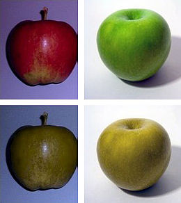

A monokromáciáról fogok ma írni, mert nagyon érdekel ez a téma semmi különösebb okom nincsen rá. Szeretem a biológiát.
A monokromácia, monokromázia vagy monokromát színlátás egy olyan állapot, amiben az élőlénynek csak egy csatornája van a színlátáshoz. Emberek esetében színvakságnak nevezik. Ilyenkor az érintett képtelen megkülönböztetni a különböző színeket.
A teljes színvakság nagyon ritka. Okai a színtévesztés okaihoz hasonlók. Kétféle lehetőség van a színtévesztés/színvakság kialakulására: az egyik, hogy betegség vagy sérülés váltotta ki (szemhályoggyulladás, mérgezés, alkoholizmus, cukorbetegség satöbbi), a másik, hogy genetikai úton öröklődött. A genetikai okok miatt kialakuló színvakságnak is két fajtája létezik, az egyik a kékcsap-monokromázia és a másik az akromatopszia. Az esetek többségében genetikai eredetű, de előfordulhat, hogy az agyban hibás a színek feldolgozása. Ha genetikai úton öröklött színvakságról beszélünk, akkor az egész életre szól.
Az akromatopszia autoszomális recesszív öröklésmenetű, ezért a férfiak között ugyanolyan ritka, mint a nőknél; megjelenésének gyakorisága egy a százezerhez. Az érintettek csak a szürke árnyalatait látják, és látásélességük alacsony, egészen gyengénlátás